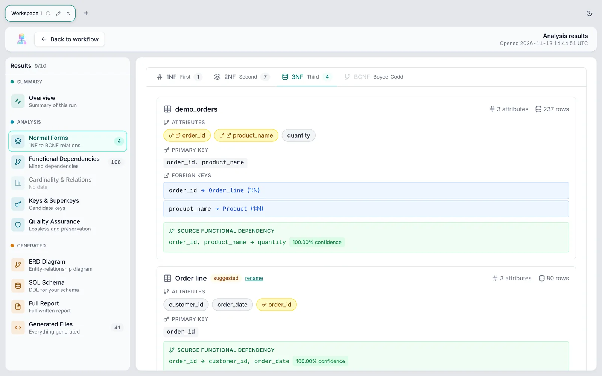

From raw tables to a relational design
NormaFlow reads CSV and spreadsheet files, finds the functional dependencies and keys, decomposes the data to 3NF or BCNF, and gives you the ER diagram, SQL and a report. Everything runs on your computer.
Looking up the latest version…
All downloads
| System | File | Size | SHA-256 |
|---|
Installing
Windows
Run the .exe installer (or the .msi for managed installs). The installer is not code-signed, so Windows may show Windows protected your PC. Choose More info, then Run anyway.
macOS
Open the .dmg and drag NormaFlow to Applications. Pick Apple Silicon for an M1 or later Mac and Intel for an older one (Apple menu, About This Mac). The app is not notarized, so the first time, right-click it and choose Open.
Linux
AppImage: chmod +x NormaFlow_*.AppImage, then run it. Debian/Ubuntu: sudo apt install ./NormaFlow_*.deb. Fedora/RHEL: sudo dnf install ./NormaFlow-*.rpm.
Check the download
Compare the SHA-256 in the table with the one you compute: sha256sum FILE (Linux), shasum -a 256 FILE (macOS) or Get-FileHash FILE (Windows PowerShell).
What it does
Describe the goal
Type what you want in plain words, such as “normalize to 3NF and generate SQL”, or “run all steps”. NormaFlow shows the pipeline it will build before it runs.
A pipeline you can edit
Nineteen steps from loading to the report. Add, remove and reorder them on a canvas, with undo.
Checked decompositions
Every result is tested for lossless join and dependency preservation, so you see when BCNF costs you a constraint.
Ready-to-use outputs
ER diagram in four notations, SQL DDL, normalized data, and a report that downloads as PDF.
Private by design
Your files are analyzed on your machine. The two small models it uses ship inside the installer, and the app needs no network.
Suggested names
A small on-device model proposes names for new relations. They are marked suggested, and you can rename them.
A look inside

